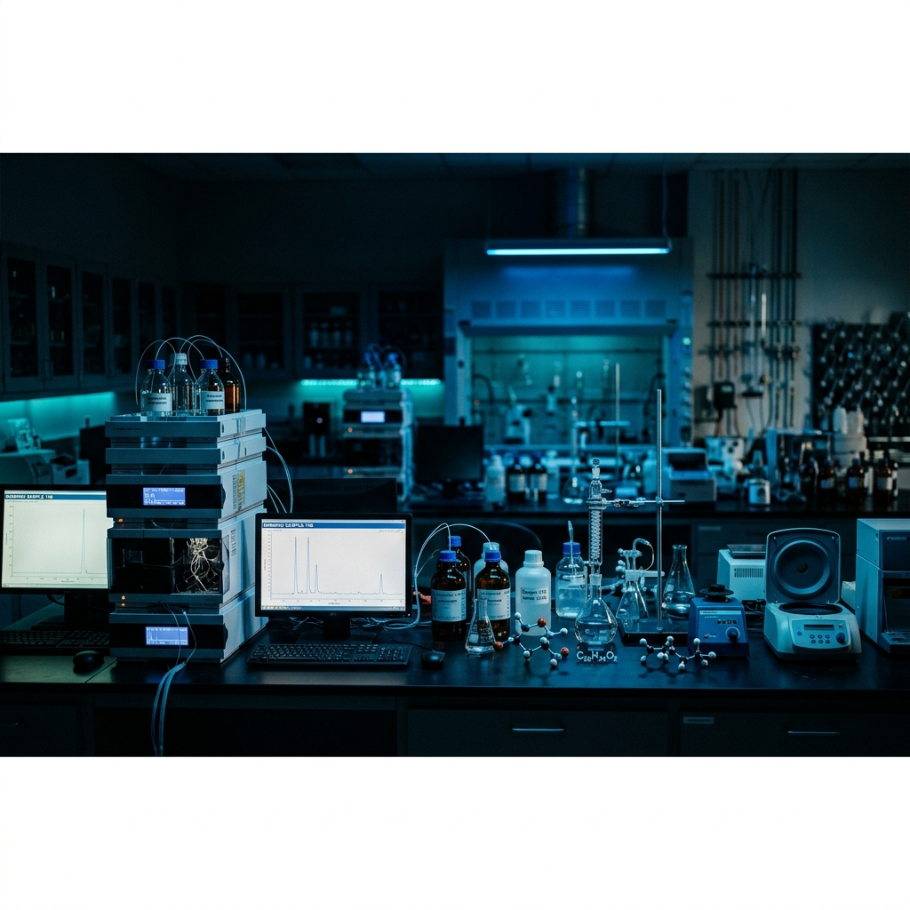
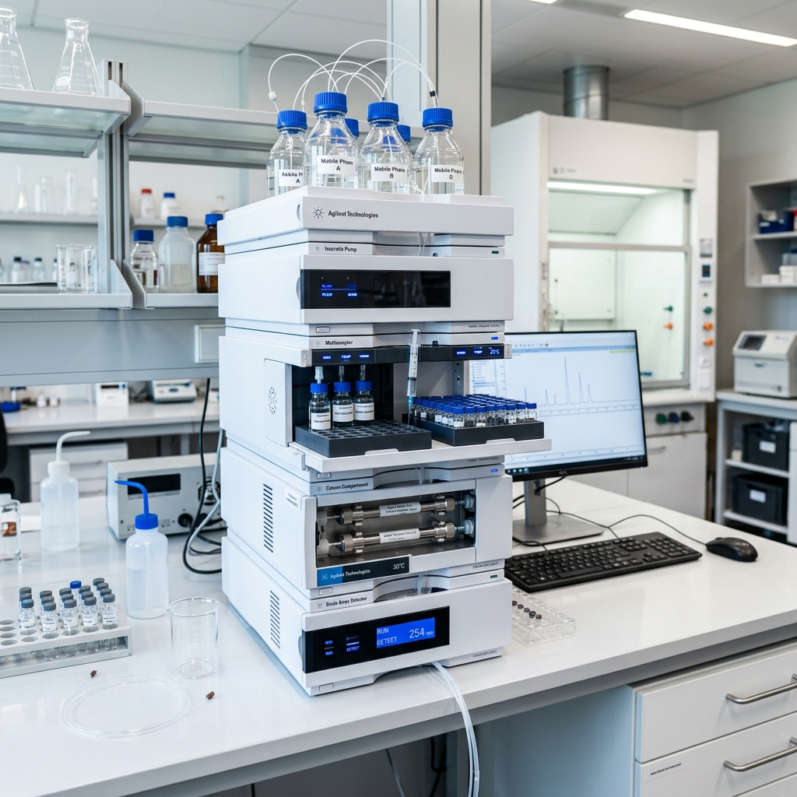
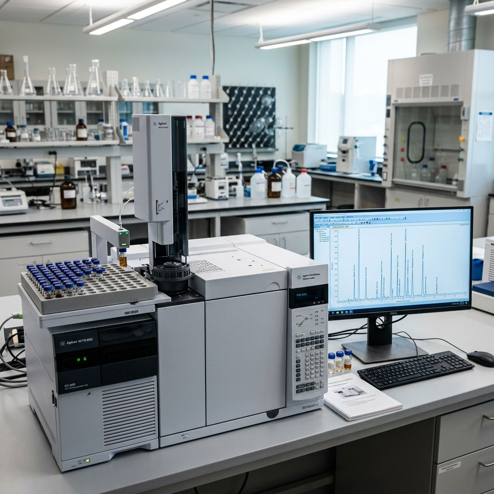
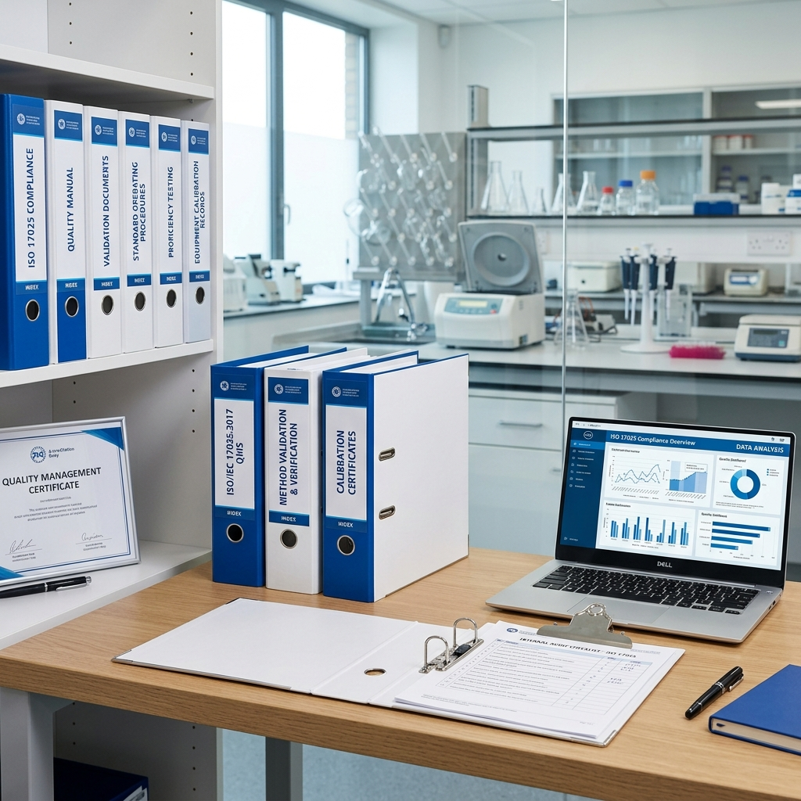
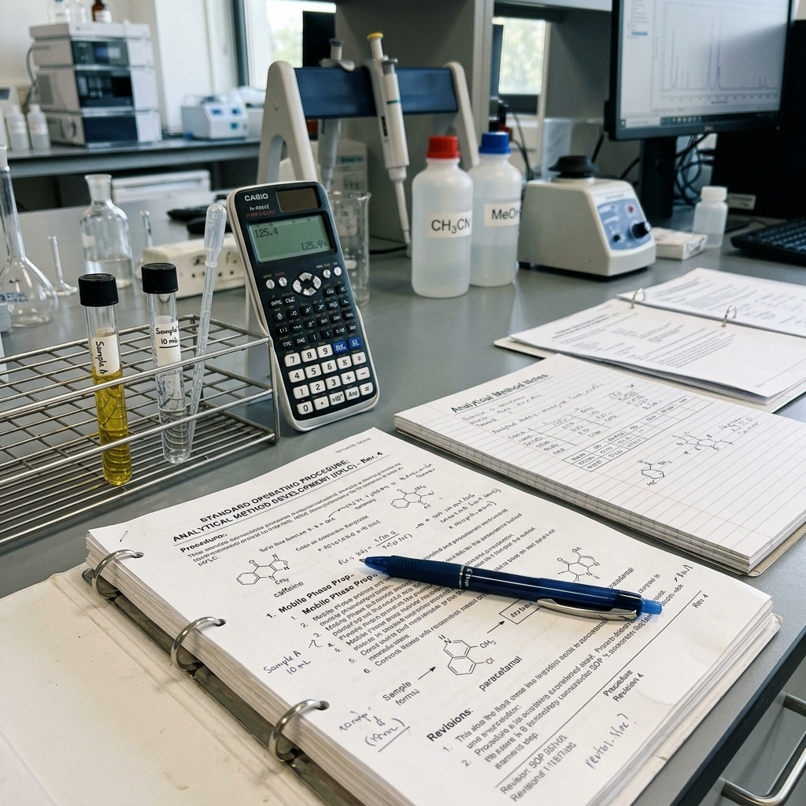
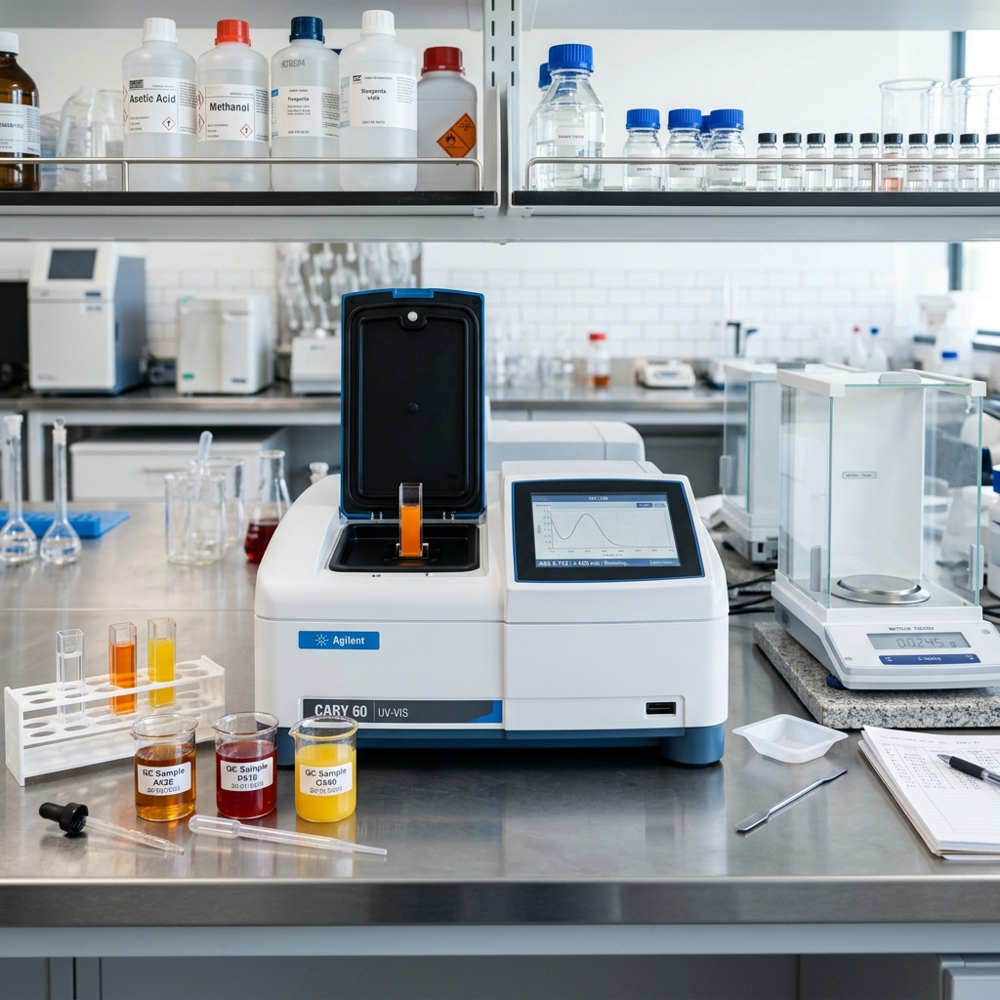
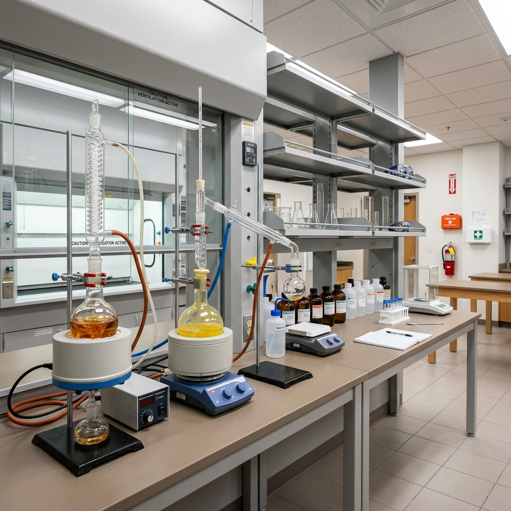

Hi, I'm Terrica Smith
I'm a
About Me
Experienced analytical chemist with over 10 years of expertise in chemical quality control, analytical instrumentation, and laboratory management across manufacturing and research environments.
Precision-Driven Analytical Chemistry Professional
With a Master of Science in Chemistry from Clemson University and a deep background in analytical instrumentation, I bring rigorous scientific expertise to every project. From operating Agilent HPLC and GC-MS systems to authoring multi-step analytical testing procedures, I ensure quality and compliance at every stage of the manufacturing process.
My career spans chemical manufacturing at Milliken & Company, food production analytics at Nestlé USA, and academic research at Clemson University — giving me a uniquely versatile perspective on laboratory operations and quality assurance.
Technical Proficiency
Resume
A dedicated chemistry professional with a strong foundation in analytical techniques, quality systems, and laboratory operations spanning chemical manufacturing, food production, and academic research.
Professional Journey
Progressive career in analytical chemistry, from graduate research through quality control leadership in manufacturing environments.
Senior Chemical QC Analyst
Milliken & Company — Magnolia Plant, Blacksburg, SC
January 2019 – PresentTests raw intermediate chemical batches and specialized polymer additives across 3 main manufacturing production lines to guarantee purity thresholds prior to massive scale blending. Operates and calibrates Agilent HPLC and GC-MS equipment daily.
Analytical Laboratory Chemist
Nestlé USA — Gaffney Production Facility, Gaffney, SC
January 2016 – December 2018Analyzed finished product samples for nutritional chemical metrics and structural trace mineral bounds using automated UV-Vis spectrometers and detailed extraction steps.
Graduate Teaching & Research Assistant
Clemson University — Department of Chemistry, Clemson, SC
August 2013 – December 2015Supervised hazardous materials setup and chemical reagent dilution sets for 4 introductory undergraduate organic chemistry lab blocks serving 80 students weekly.
Academic Background
Strong academic foundation in chemistry with graduate-level specialization in analytical techniques and instrumentation.
Master of Science in Chemistry
Clemson University, Clemson, SC
Concentration in Analytical Chemistry. Graduate Assistantship Recipient. Research focused on advanced instrumentation and analytical methodology.
Bachelor of Science in Chemistry
Limestone University (formerly Limestone College), Gaffney, SC
Foundational coursework in organic, inorganic, physical, and analytical chemistry with extensive laboratory training.
Laboratory & Analytical Competencies
Expertise
Comprehensive analytical chemistry capabilities spanning instrumentation, wet chemistry, quality systems, and laboratory management — honed across manufacturing, food production, and academic research settings.
Chemical Quality Control
Testing raw intermediate chemical batches and polymer additives across production lines to guarantee purity thresholds.
ExploreHPLC & GC-MS Analysis
Daily operation and calibration of Agilent HPLC and GC-MS equipment, including column replacement and standard dilution curves.
ExploreMethod Development
Authoring multi-step analytical testing procedures for new product formulation runs and translating chemistry into assembly guides.
ExploreOOS Investigation
Diagnosing instrumentation drift errors in out-of-specification reports and documenting validation adjustments for ISO compliance.
ExploreNutritional Analysis
Analyzing finished product samples for nutritional chemical metrics and structural trace mineral bounds using UV-Vis spectrometry.
ExploreKarl Fischer Titration
Specialized moisture assay analysis and chemical shelf-life studies with daily variance logging and titrator calibration.
ExploreSafety & Compliance
Safe handling, disposal, and replenishment logistics for bulk laboratory solvents aligned with hazardous waste guidelines.
ExploreQuality Systems
GLP compliance, ISO 17025 validation frameworks, SDS logging systems, and hazardous chemical inventory protocol management.
ExploreLooking for a Reliable Analytical Chemist?
Let's discuss how my expertise in quality control and analytical instrumentation can support your laboratory and manufacturing needs.
Portfolio
A selection of key projects and analytical work spanning chemical quality control, nutritional analysis, research methodologies, and laboratory operations across multiple industries.
- All Work
- Quality Control
- Analysis
- Research
- Methods

{kind=link}

{kind=link}

{kind=link}

{kind=link}

{kind=link}

{kind=link}
Interested in my work?
I bring precision, reliability, and deep analytical expertise to every project. Let's connect to discuss how I can contribute to your team.
Contact
I'm always open to discussing new opportunities, collaborative research, or how my analytical chemistry expertise can support your organization's goals.
Address
100 Killion Dr, Apt 4C, Gaffney, SC 29340
Email Me
teresiasmith26@outlook.com